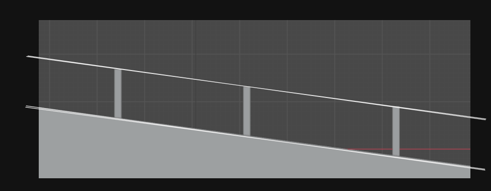

透视学习 02——原线变线，灭点灭线，缩尺法，视高法
该透视教材在系统地讲两点、三点透视以前，先关注近大远小，即同一大小的物体在不同位置时要画出的大小，这或许是更科学的方式。
TODO 这一章的视高法得添加更多例子。
使用一个 T 字的形状来表示人的视线，视平面以及画面。容易发现这里可以建出来一个坐标系，这个坐标系是对镜头主观的，随镜头的位置，旋转为转移。画面就是我们通常说的画布。

为了更好地研究透视问题，这里引入更多术语。
原线，变线
原线，即在三维空间中与画面平行的线；原线按它们和视平面的关系分为三类——水平原线，垂直原线和倾斜原线。和视平面平行的原线是水平原线，垂直的是垂直原线，否则是倾斜原线。
原线因为与画面平行，所以投影到画面上时，不会有透视压缩，因此，原线可以在画面上任意移动，而不改变它的长度。
变线则是三维空间中与画面不平行的线，总共五种；平行于视平面的变线称为平变线，其它的称为斜变线。变线会受到透视压缩。
平变线分为直角平变线，45 度角平变线，和其他角度平变线；直角平变线就是直接垂直于画面的平变线，45 度角平变线就是和画面呈 45 度角的平变线；其他的则属于其他角度平变线。
直角平变线指向的是心点，45 度角平变线指向的是距点，其他角度的平变线和视平线的焦点则既非心点也非距点。
和视平面不平行（即倾斜）的线称为斜变线。近端低远端高的称为上斜变线，近端高远端低的称为下斜变线。上协变线的灭点在视平线上方，下斜变线的灭点在视平线下方。
注意这里引入了近，远的概念，因为只看线条本身是看不出它是朝上还是朝下的。比如这里圈出两根线，它们一个向上一个上下，但看上去都是向右上的。

灭点，灭线
所有在三维世界中平行的变线，在画面上将其延长后，都将聚焦到同个点上，这个点称为灭点。灭点不在遥不可及的天空或地平线上，灭点在画面上。
灭点分为五种——
- 心点，直角平变线的灭点
- 距点，45 度平变线的灭点
- 余点，视平线上心点、距点以外的其他灭点
- 升点，视平线上方的灭点
- 降点，视平线下方的灭点
注意这里重新定义了心点，这个定义通常会使用在对画面进行过裁切的时候，比如使用两点透视绘制三点透视的时候。
从线的角度来说，所有在三维世界中处在同一个平面上的线（以及平行于这个平面上的线），这些线的灭点将在同一条线上，这条无数个灭点组成的线称为灭线。
或者，从面的角度来说，三维世界的一个平面，以及平行于它的平面，它无限延伸时，在透视的尽头会得到一条直线，这条直线称为灭线。就这个角度来说，地平线是地平面，以及所有水平面的灭线。
灭线的定义让我们知道，同一个平面上，所有线条得到的灭点将均在同一条直线上。
一个形象的展示灭线的方法是，让手臂以该平面的法线去轴进行旋转（就像招手），这个轨迹和画面的交点就是灭线。
根据灭线，我们可以反过来对这样的构造这样的灭线的平面做分类。我们知道，线条可以分为三类——垂直线，水平线，斜线；而根据是否过心点又可以分为两类，因此这里有六类灭线，对应六种平面，如下面的 A 图 B 图。

容易发现，在一点透视时，总是得到过心点的灭线，两点、三点透视的灭线则通常不过心点。
找灭线
一个常见的问题是找一个矩形面的灭线，如果该矩形面有一对原线，一对变线，则找该对变线的灭点，做原线的平行线就得到灭线；如果该矩形面有两对变线，则找两对变线的两个灭点，过它们做一直线得到灭线；如果该矩形面两对线均是原线，则该矩形面平行于画面，无灭线。
举例来说，对一个上行的台阶，尝试找到台阶的升点，这时候只要找出台阶侧面的灭线（这时候得确认这个台阶是两点还是三点透视，假设两点透视）。
两点透视时，它的侧边是有一对变线一对原线的，我们得到了变线的灭点，做平行于原线的线即得到灭线，做台阶和灭线的交点就是升点。

然而很多时候其实是没必要找升点的，斜线可以直接通过作图做出来。
处理原线的长度
当我们说近大远小，我们实际上就是在试图处理原线的长度——原线的长度没有透视压缩，因此决定它的大小的只有它和镜头的距离，理解原线长度的求法是很重要的，它能够回答一个重要问题——这个人站在这里，他究竟该画多高？知道了他的高度，他的宽度就好求了。
这里的问题具体的说，就是要根据物体实际高度确定垂直原线的长度（称为物体的透视高度），或者反之。这里引入两种方法——缩尺法和视高法，缩尺法利用已有的垂直原线推出新的垂直原线，而视高法利用视平线去得到指定高度的垂直原线。
缩尺法
缩尺法利用画面上已有的垂直原线，作图得到新的和它在三维空间商等长的垂直原线：
- 对于一个垂直原线，将其在画面上随意移动时，它的大小不变；我们可以将垂直原线进行移动，使得物体在一个平行于画面上的平面上移动，从而调整物体的左右位置，上下高度
- 将垂直原线顶端底端和心点连接做成一个“轨道”，在轨道的任意地方做垂线，垂线和轨道的两个焦点就是新的和它等长的垂直原线，这个“轨道”称为缩尺，缩尺各处高度恒定。

缩尺法可用于拷贝物体的高度，上图给 B 处的人物做缩尺，然后在①处做平行线（在画面上左右移动）得到等高的人物 C，②处做平行线得到登高的人物 D。
缩尺法的存在意味着，对于平视，只要我们能够明确画面中任何物体的高度，我们就能使用这个高度推导出其他物体的高度，一切都来自于原线不会有透视压缩，因此保持了自己的比例关系这个方便的性质。
这里也引入几个新的术语：
- 基线，画面底端的水平线称为基线，可以认为基线上的线是没有透视压缩的（这个是基于此书的心智模型的说法，此书的心智模型中，画面是就地摆放在被画物体的旁边的）
- 真高线，和基线相交，垂直于基线的线，可以认为基线和真高线都是“贴”在画面上的，因此没有透视压缩

我们可以直接在真高线上定出坐标系来当作参照；只要保证基线和真高线的尺度单位等长即可。这个通常用在设计图中，不表。
视高法
缩尺法中没有考虑镜头本身的位置，只是用已有的原线去做发散；而视高法则考虑镜头本身。
暂且处理和镜头同在地平面上的物体；这时候可以把“视高”认为是镜头到地面的高度。容易发现，平地上任何一点，到地平线的高度就是透视视高。比如下图，我们能清晰地知道，镜头和桌子等高，镜头是二分之一人高。


因此，我们可以以地平线为准绳——下图 A 图，镜头在膝盖高度，所以所有人的膝盖都处在地平线位置；B 图中，镜头为二分之三人高，所以所有人的头顶距地平线都是二分之一人高。
容易发现，视高法利用上了镜头的高度（地平线），不用画缩尺就能画出不同远近的人。视高法就是利用视高的透视高度就地量得物体的透视高度。
视高法会将不同位置站立的人的同一身体部位“束缚”在地平线上，如下图的奶牛的背部，人的小腿。


多平面的视高法
上面都是镜头和人在同一个平面的情况，倘若人站在高台，站在洼地中呢？其实一样——对于同一个平面上的诸多同高度物体，视高都是相同的，换平面，我就换思考视高的方式。

多么有趣的画面，同样高的人，对比起来能差别这么大。在二次元插画中很少见到有人尝试画出这种远近对比。

再者，即使是不规则的坡面，只要镜头是平视，我们都能根据人的身高以及和地平线的距离取得视高。

地平线的“束缚”也能被我们利用——只需要绘制在这束缚之外的人，就能暗示高低差。

下斜、上斜斜面视高法
斜面时问题就有些复杂了，得研究研究，但注意这里仍旧是平视。考虑一个下坡，安排几个人，

这时候侧视图会是这样，能看到这里有两个平面——斜面平面，以及各人的头顶组成的平面，这两个平面是平行的，因此共同一个灭线。

同时，我们知道，镜头如果在一个平面上，该平面上的所有内容将被投影成画面上的一条线。这也就是说，如果镜头放在斜面上，此时所有人的脚都在斜面的灭线上；如果镜头在人的头顶平面上，此时所有人的头都在斜面的灭线上；如果镜头在人的腰部平面上（所有人的腰部同样组成一个平面），此时所有人的腰部都在斜面的灭线上。
我们说，镜头在人的头顶平面上时，视高为 1 人高，镜头在斜面上时，视高为 0。倘若规定镜头的方位，只控制镜头的高低来控制视高，这时候是怎么操作呢？我们发现，镜头垂直移动时，距离上斜、下斜平面在铅垂方向上的距离就是视高，此时斜面灭线替代了地平线，这是说，斜面上任何一点到灭线的铅垂高度就是视高。
考虑上斜斜面如下图，视高是二分之三个人。

向心点斜面视高法

这个斜面是“滚转”的。思考方式和下斜、上斜面一样——考虑斜面平面，以及所有人的头顶构成的平面，注意到，镜头正好放在斜面上时，所有人的脚都在灭线上；镜头正好在头顶平面上时，所有人的头都在灭线上；镜头在人的腰部平面上时，所有人的腰部都在灭线上。
同样地，规定镜头在斜面上时，视高为0，规定镜头在人的头顶平面上时，视高为1人高，容易发现，斜面上任何一点到灭线的铅垂高度就是视高。
余角透视斜面视高法
注意到，平面的灭线就是视平线，下斜、上斜面的灭线平行于视平线，而向心点斜面的灭线倾斜于视平线，但是和视平线交于心点。这里当然还能有一种更广泛的斜面——灭线倾斜于视平线，且和视平线不交于心点的斜面，这时候的斜面是余角透视的。这个斜面是最复杂的斜面了。

不推了，看图就发现，还是处理的铅垂方向。为什么是铅垂方向？因为人是直立的，而镜头也是，所以视高总是在铅垂方向做计算。
通过这几种斜面，就能够写出更广泛的视高的定义：视高是眼睛位置和被画物体所在平面的铅垂方向的距离，视高是随物体所在平面改变的，换一个平面，就要换一个视高算法。

本博客所有文章除特别声明外，均采用 CC BY-NC-SA 4.0 协议 ，转载请注明出处！